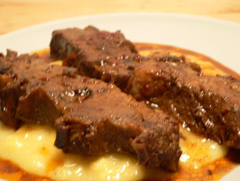

Braised flanken
If you decide you can’t resist the combination of ancho chiles, chipotle chiles, coffee, maple syrup, and lime juice, as I couldn’t, and you decide to braise short ribs or flanken as per Gourmet’s recipe, let me just make one suggestion:

Double the liquids called for the in the recipe, or even triple them. You’ll notice in the above photograph, even though it’s blurry, that this dish is grease city. I know…so gross. But when I went to remove the hardened fat after refrigerating this for a day, there was such a small amount of liquid left from the braising that it had all become fat, and removing it would have entailed removing every bit of sauce.
Please note that I halved the recipe but nearly doubled the liquids, adding coffee and water at the beginning, middle, and end of the cooking to prevent it from drying out. My flanken was in one short layer with the braising liquid approaching the top of the meat.
I only make beef dishes when I find a recipe that sounds especially delicious or unique, as this one did. Having such a small amount of liquid took all the appeal out of this dish. The meat was tender but hardly flavorful. The bed of polenta underneath it, which I flavored with maple syrup, was the highlight.
Mommy? You’re the beef queen. Please advise.
Comments
Am I correct—flanken are basically boneless short ribs? If that is so, they are intrinsically a very fatty cut of beef; the fat is part of the fun of eating them! I like my short ribs on the bone, browned and then braised for a long time. I don’t attempt to remove the grease, just eat the sauce in all its greasy glory.
I’m interested in the coffee part of your sauce; I have found that when I’ve used coffee in anything other than a dessert it seems to impart a bitterness I don’t like. Was your dish bitter?
Mommy
No bitterness at all, but I couldn’t taste the coffee.
Flanken, according to FreshDirect, are tiny, tender beef ribs. They had little bones on them that fell off in the pan, which was kind of cool.
When you think about how fatty pork ribs are it’s not surprising these would be greasy, too. Even more so, as the trend has been toward leaner pigs and fatter cattle for years now unless you’re in Tuscany where the steers must have to plunge up and down those mountainous hillsides if the toughness of the steaks is anything to go by. Flavorful, though. You should eat flanken there.
Mom
Good point. I’ll remember that next time I’m under the Tuscan sun.
Mommy, or anyone else, do you ever cook with chiles? I have a bunch of leftover chiles in the house and I don’t know what to do with them.
Are these dried chiles? If so, they should last a long time, although that reminds me that I have a jar of dried chiles that has been on the shelf since you were a little boy that should probably be emptied! The contents have surely lost their savor…
Mommy
Mmmmmmmm…….greezy short ribs (gargle and drool)
Yes, they are dried chiles, except for the chipotle chiles in adobo sauce, which I have in the fridge.
Yes, Alex, they were greeeezy.
Add a comment